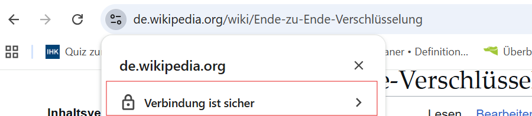
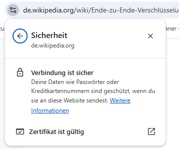
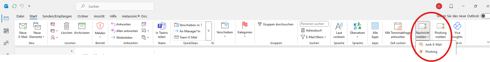
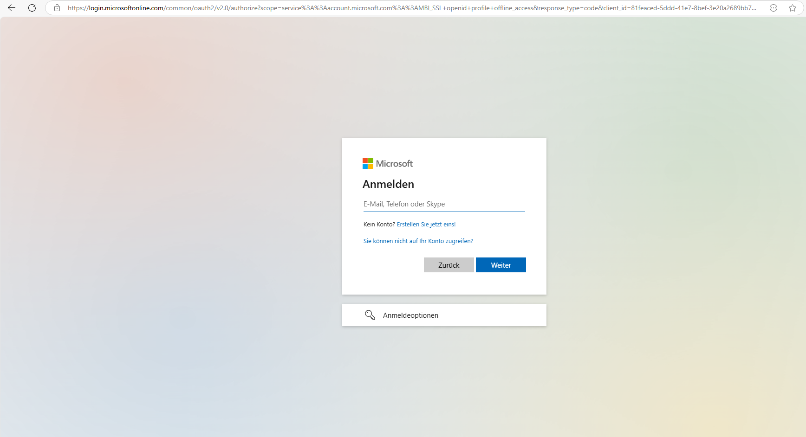
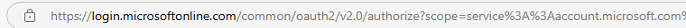
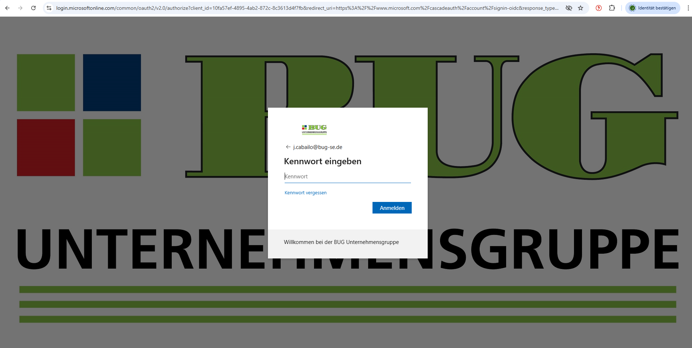

Wie schützt man sich vor?
Die Minimierung von IT-Risiken sowie die Gewährleistung von IT-Sicherheit erfordern die Umsetzung sowohl technischer als auch organisatorischer Maßnahmen seitens des Unternehmens. Ein Unternehmen, das keine klaren und durchdachten Sicherheitsrichtlinien und -verfahren etabliert hat, riskiert erhebliche finanzielle Verluste, den Verlust von Daten und einen Imageschaden.
Um sich wirksam gegen Cyberangriffe zu schützen, ist es wichtig, dass alle Mitarbeitenden die möglichen Gefahren kennen – dazu gehören unter anderem Schadsoftware (Malware), betrügerische E-Mails, Manipulationsversuche (Social Engineering) oder Angriffe auf Netzwerke und Passwörter. Nur wer die Risiken versteht, kann im Arbeitsalltag sicher mit IT-Systemen umgehen und im Ernstfall richtig reagieren.
Ein erster wichtiger Schritt besteht darin, Schwachstellen im eigenen Arbeitsumfeld zu erkennen. Das betrifft nicht nur die Technik, sondern auch die täglichen Abläufe und das eigene Verhalten im Umgang mit digitalen Systemen. z. B. Darauf achten , wie man mit sensiblen Daten umgeht, welche E-Mails man öffnet oder welche Passwörter man verwendet.
Auf Basis solcher Analysen entwickelt das Unternehmen konkrete Sicherheitsrichtlinien und Schutzmaßnahmen. Diese sollen den Mitarbeitern dabei helfen, sich sicher im digitalen Raum zu bewegen – ob beim Umgang mit E-Mails, bei der Nutzung von Webdiensten oder beim Zugriff auf interne Daten. Dazu gehören klare Regeln für den Umgang mit verdächtigen Nachrichten, Dateien und Links sowie Hinweise zur sicheren Nutzung der IT-Infrastruktur.
Organisatorische Maßnahmen
Die Schulung von Mitarbeitenden zählt zu den wirkungsvollsten Maßnahmen, um Cyberangriffen wie Phishing, Social Engineering oder Malware-Angriffen vorzubeugen. Solche Schulungen finden in der Regel in Form von Informationsveranstaltungen oder interaktiven Trainings statt. Dabei werden aktuelle Angriffsmethoden vorgestellt, typische Anzeichen für Bedrohungen erläutert und praxisnahe Verhaltensweisen für den Ernstfall vermittelt.
Die Wirksamkeit von Sicherheitsrichtlinien hängt maßgeblich davon ab, ob Mitarbeitende die Inhalte nachvollziehen können und bereit sind, diese in den Arbeitsalltag zu integrieren. Daher spielt neben der technischen Umsetzung auch die kontinuierliche Sensibilisierung eine zentrale Rolle.
Ergänzend zu Schulungen können auch simulierte Cyberangriffe – beispielsweise Phishing-Tests – eingesetzt werden. Sie dienen dazu, das Sicherheitsbewusstsein zu stärken, den Umgang mit verdächtigen Situationen zu üben und mögliche Schwachstellen frühzeitig zu erkennen.
Die Entwicklung von Cyber-Bedrohungen erfolgt permanent. Die Vorgehensweisen der Angreifer unterliegen einem ständigen Wandel. Daher ist es von essenzieller Bedeutung, die Sicherheitsrichtlinien in regelmäßigen Abständen zu überprüfen und gegebenenfalls anzupassen, um neue Gefahren zu berücksichtigen. Im Rahmen des stetigen Verbesserungsprozesses sollten auch Mitarbeitenden-Feedback sowie vergangene Vorfälle berücksichtigt werden.
Technische Maßnahmen
Zusätzlich zu den Schulungen wird die Implementierung von technischen Sicherheitsmaßnahmen empfohlen. Diesbezüglich sei auf die potenzielle Nutzung von Spam-Filtern, Anti-Phishing-Tools, E-Mail-Verschlüsselung sowie die Implementierung von Multi-Faktor-Authentifizierung (MFA) verwiesen. MFA verbindet ein dem Nutzer bekanntes Element (beispielsweise ein Passwort) mit einem Element, das der Nutzer bei sich trägt (beispielsweise eine Smartphone-
Applikation). Dadurch wird der unbefugte Zugriff erheblich erschwert, selbst im Falle des Diebstahls der Zugangsdaten.
Die implementierten Maßnahmen dienen der Prävention potenzieller Gefahren, die von verdächtigen E-Mails ausgehen, indem deren Zugang zum Posteingang der Mitarbeiter:innen unterbunden wird, bevor diese die Möglichkeit haben, sie zu öffnen.
Im Folgenden werden ergänzende Maßnahmen dargestellt, die dazu beitragen, den Schutz vor Cyberangriffen zu verbessern und potenzielle Sicherheitsrisiken zu minimieren.
Verschlüsselung:
Eine starke End-to-End-Verschlüsselung stellt eine grundlegende Voraussetzung für die Netzwerksicherheit dar. Durch die Verschlüsselung des gesamten Netzwerkverkehrs sowie sämtlicher Ressourcen – einschließlich E-Mail-Inhalte, DNS-Einträge, Messaging-Anwendungen und Access Points – kann verhindert werden, dass unbefugte Dritte Daten abfangen oder manipulieren.
Sichere Netzwerkverbindungen:
Man sollte öffentliche WLAN-Netzwerke vermeiden, insbesondere bei der Übertragung sensibler Daten. Die Nutzung eines virtuellen privaten Netzwerks (VPN) bietet zusätzlichen Schutz, da der gesamte Datenverkehr verschlüsselt wird. Dadurch bleiben vertrauliche Informationen, wie Anmelde- oder Kontodaten, selbst im Falle eines Datenabgriffs unlesbar.
HTTPS und Sicherheitszertifikate:
Beim Aufrufen von Webseiten sollte stets auf eine gesicherte Verbindung geachtet werden. Diese ist an der Kennzeichnung „https://“ sowie am Schlosssymbol in der Adresszeile des Browsers erkennbar. Unverschlüsselte Seiten sollten grundsätzlich gemieden werden. SSL- und TLS-Protokolle schützen zusätzlich Anwendungen vor bösartigem Webverkehr und verhindern Spoofing-Angriffe.


Softwarequellen:
Software sollte ausschließlich aus vertrauenswürdigen und offiziellen Quellen heruntergeladen werden, beispielsweise direkt von den Webseiten der Anbieter oder aus offiziellen App-Stores. Über inoffizielle Downloadportale kann unbemerkt Schadsoftware auf das System gelangen.
Umgang mit E-Mails und Nachrichten:
E-Mails und Nachrichten sollten immer mit besonderer Achtsamkeit behandelt werden, da sie oft als Eintrittspunkt für Cyberangriffe genutzt werden. Es sollte grundsätzlich vermieden werden, Links in E-Mails oder Textnachrichten anzuklicken oder verdächtige Anhänge zu öffnen. Selbst Nachrichten, die vertrauenswürdig erscheinen, können Schadsoftware enthalten. Im Zweifelsfall empfiehlt es sich, die Echtheit der Nachricht über einen anderen Kommunikationsweg zu überprüfen. Um sich zu schützen, sollten eingehende Mahnungen oder Zahlungsaufforderungen stets sorgfältig geprüft und Absenderadressen hinterfragt werden. Vor einer Reaktion, etwa einer Zahlung oder dem Anklicken eines Links, ist es ratsam, sich direkt beim angeblichen Unternehmen zu vergewissern.
Verdächtige Nachrichten sollten aus dem Posteingang gelöscht und über die entsprechenden Funktionen, beispielsweise in Outlook, als Phishing- oder Spam-Mails gemeldet werden.

Kleiner Tipp: Links sollten vor dem Anklicken geprüft werden, indem man mit dem Mauszeiger darüberfährt, um die tatsächliche Zieladresse zu sehen. Weicht diese von der offiziellen Firmenwebsite ab oder handelt es sich um auffällige URLs, wie gefälschte Domains, gekürzte Links oder numerische IP-Adressen, ist höchste Vorsicht geboten.
Auch die Sprache und der Stil einer Nachricht sollten kritisch bewertet werden, da ungewohnte Formulierungen, Rechtschreibfehler oder der Aufbau von Druck häufig auf betrügerische Absichten hinweisen.
Darüber hinaus ist es wichtig, auf Handlungsaufforderungen in verdächtigen Nachrichten nicht zu reagieren. Häufig versuchen Cyberkriminelle, durch Zeitdruck oder Drohungen zu unüberlegtem Handeln zu bewegen. Man sollte in solchen Fällen Ruhe bewahren und die Echtheit der Nachricht prüfen, bevor Maßnahmen ergriffen werden. Ebenso gilt, dass seriöse Unternehmen niemals per E-Mail nach Passwörtern, PINs oder anderen vertraulichen Informationen fragen. Solche Daten sollten grundsätzlich nicht weitergegeben werden, um den Missbrauch sensibler Zugangsdaten zu verhindern.
Zur Verifizierung empfiehlt es sich, die offizielle Website des vermeintlichen Absenders direkt aufzurufen und die dort angegebenen Kontaktinformationen zu nutzen, anstatt auf Daten aus der E-Mail zu vertrauen. Im Falle von Rechnungen oder Mahnungen sollte im Kundenportal des Unternehmens überprüft oder telefonisch nachgefragt werden, ob die Nachricht echt ist.
Bei eindeutig verdächtigen Fällen ist die IT-Abteilung zu informieren oder die Nachricht umgehend zu löschen.
Anmeldeversuche/Login-Seiten:
Sollte eine Anmeldung erforderlich sein, so ist diese ausschließlich über die offizielle Firmenwebsite vorzunehmen (beispielsweise über das Kundenportal mit Login).
Die offizielle Login-Seite von Microsoft lautet immer: https://login.microsoftonline.com.
Hinweis: Keine Weiterleitung auf unbekannte Login-Seiten oder externe Plattformen. Immer https://login.microsoftonline.com.


Im Zuge der Anmeldung mit dem Unternehmenskonto erfolgt eine Umleitung auf die Unternehmensseite, sodass eine Verifizierung der Identität des Anmeldenden und die Bestätigung der Zugehörigkeit zum Unternehmen möglich ist. Infolgedessen wird das Hintergrundbild der Seite automatisch auf das Logo des Unternehmens aktualisiert.

Hier ist erkennbar, dass der Mitarbeiter der IT-Abteilung sich anmelden wollte und direkt auf die Unternehmensseite weitergeleitet wurde. Das Logo des Unternehmens sowie die Begrüßung "Willkommen bei der BUG Unternehmensgruppe" weisen darauf hin. Dies gilt grundsätzlich für alle Unternehmen, jedoch unter Verwendung ihres Logos und ihrer Grußformel.
Wenn kein Logo angezeigt wird, ist unbedingt Vorsicht geboten und es dürfen auf keinen Fall Daten weitergegeben werden!
Pop-up-Warnungen:
Auf Pop-up-Anzeigen, die vor angeblichen Systemproblemen warnen oder dazu auffordern, Programme herunterzuladen, sollte nicht reagiert werden. Solche Meldungen dienen häufig der Verbreitung von Schadsoftware.
Antivirus- und Anti-Malware-Schutz:
Aktuelle Antivirus- und Anti-Malware-Programme leisten einen wichtigen Beitrag zur Systemsicherheit. Durch regelmäßige Updates und Scans kann potenzielle Schadsoftware frühzeitig erkannt und entfernt werden. Dennoch ersetzt solche Software kein sicheres und umsichtiges Verhalten im digitalen Raum.
Datensicherung (Back-up):
Regelmäßige Back-ups sind unerlässlich, um im Falle eines Cyberangriffs oder Systemausfalls den Zugriff auf wichtige Daten sicherzustellen. Dadurch kann der Datenverlust auf ein Minimum reduziert werden.
Multi-Faktor-Authentifizierung:
Die Nutzung von Zwei- oder Multi-Faktor-Authentifizierung erhöht die Sicherheit beim Zugriff auf Unternehmenssysteme deutlich. Sie erschwert den unbefugten Zugriff, selbst wenn Zugangsdaten kompromittiert wurden.
Netzwerk- und Zugriffsschutz:
Technische Maßnahmen wie Ratenbegrenzung, IP-Filterung und Geoblocking tragen dazu bei, den Datenverkehr zu kontrollieren und verdächtige Aktivitäten zu blockieren. Dadurch können Angriffe frühzeitig erkannt und abgewehrt werden.
Aktualität und Sensibilisierung:
Man sollte sich regelmäßig über aktuelle Entwicklungen im Bereich der Cyberkriminalität informieren. Durch Schulungen und Sensibilisierung kann das Sicherheitsbewusstsein gestärkt und die Reaktionsfähigkeit bei potenziellen Bedrohungen verbessert werden.
Notfälle
Trotz umfangreicher Sicherheitsmaßnahmen lässt sich das Risiko eines erfolgreichen Cyberangriffs nie vollständig ausschließen.
Deshalb ist es umso wichtiger, im Ernstfall vorbereitet zu sein und genau zu wissen, wie man reagieren sollte. Ein klar definierter Notfallplan hilft, vom ersten Verdacht bis zur Wiederherstellung des Normalbetriebs strukturiert vorzugehen.
Schnelle Meldung verdächtiger Aktivitäten
Ein zentraler Bestandteil der Notfallreaktion ist, dass Mitarbeitende verdächtige Aktivitäten oder sicherheitsrelevante Vorfälle sofort melden können. Hierfür sind eindeutige Meldewege (z.B. per Ticketsystem) und Ansprechpartner definiert – über die IT-Abteilung.
Eine schnelle Meldung kann entscheidend sein, um mögliche Schäden zu begrenzen oder sogar ganz zu verhindern. Im Ernstfall wählen Sie bitte direkt die Notfallnummer: +49 30 818700912, um unverzüglich Unterstützung zu erhalten.
Wie Sie verdächtiges Verhalten erkennen und darauf reagieren
Auffälligkeiten können sich auf verschiedene Weise zeigen: ungewöhnliches Systemverhalten, verdächtige E-Mails, unbekannte Dateien oder unautorisierte Zugriffe. Treten solche Anzeichen auf, melden Sie den Vorfall umgehend und dokumentieren Sie die Beobachtungen.
Offensichtliche Täuschungsversuche oder potenziell gefährliche Dateien sollten vorsichtig gelöscht werden – im Zweifel gilt: lieber löschen als unbedacht darauf klicken. Diese Grundregel gilt sowohl am Arbeitsplatz als auch im privaten Umfeld.
Überprüfung von Zugängen und Passwörtern
Nach einem Vorfall empfiehlt es sich, alle genutzten Zugänge sorgfältig zu überprüfen. Sollten Anzeichen bestehen, dass Zugangsdaten kompromittiert wurden, müssen sämtliche Passwörter sofort geändert werden – nicht nur für den betroffenen Dienst,
sondern auch für andere Konten, bei denen ähnliche oder identische Daten verwendet werden. Die Wiederverwendung von Passwörtern stellt ein erhebliches Sicherheitsrisiko dar, da bereits der Zugriff auf einen einzigen Dienst Cyberkriminellen weitreichende Möglichkeiten eröffnen kann.
Systeme auf Schadsoftware prüfen
Zusätzlich sollte das betroffene System auf Schadsoftware untersucht werden. Hierbei ist der Einsatz aktueller Sicherheitslösungen besonders wichtig, die über klassischen Virenschutz hinaus Funktionen wie Verhaltenserkennung, Echtzeitschutz und sicheren Internetzugang bieten.
So kann sichergestellt werden, dass mögliche Infektionen frühzeitig erkannt und beseitigt werden.
Zusammengefasst
Im Notfall gilt: schnell handeln, Meldungen über die Notfallnummer +49 30 818700912 tätigen, verdächtige Inhalte vorsichtig behandeln, alle Zugänge prüfen und Passwörter ändern sowie Systeme auf Schadsoftware untersuchen.
Wer diese Schritte kennt und befolgt, trägt maßgeblich dazu bei, Schäden zu minimieren und den normalen Betrieb schnell wiederherzustellen.